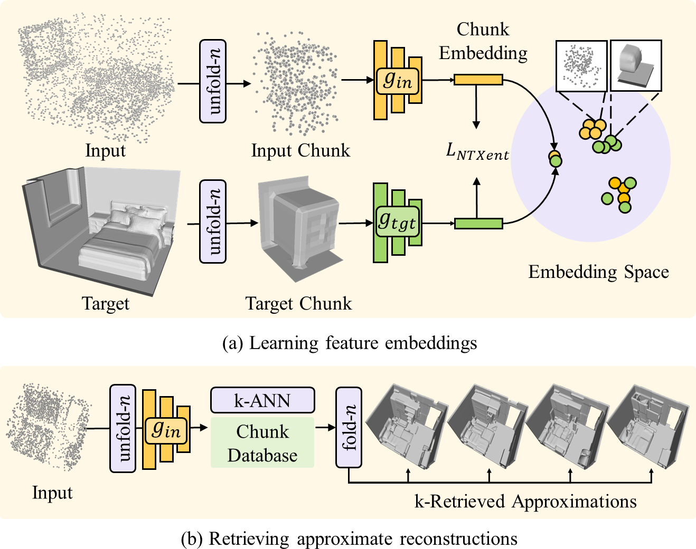
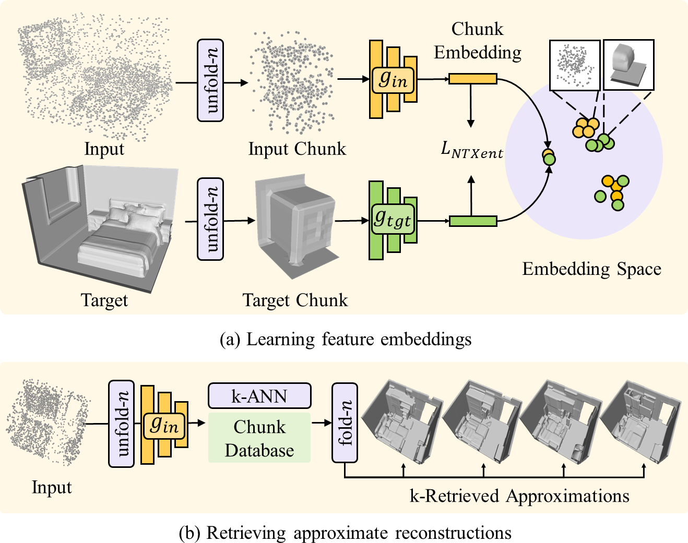
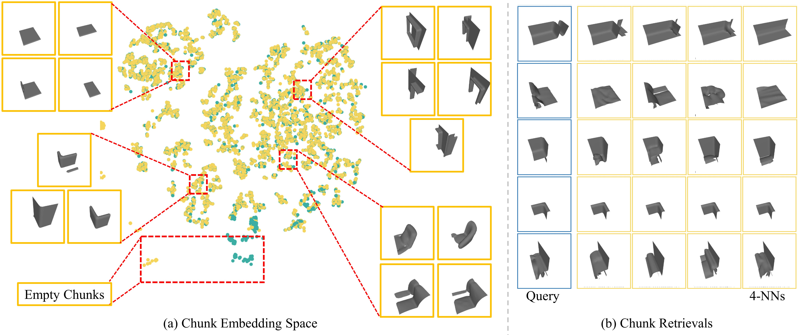
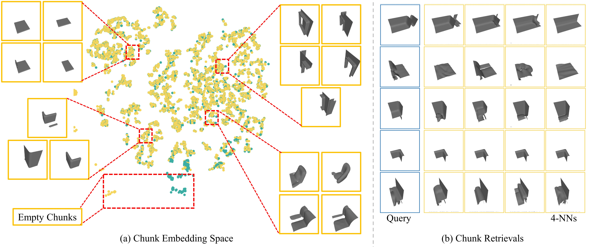
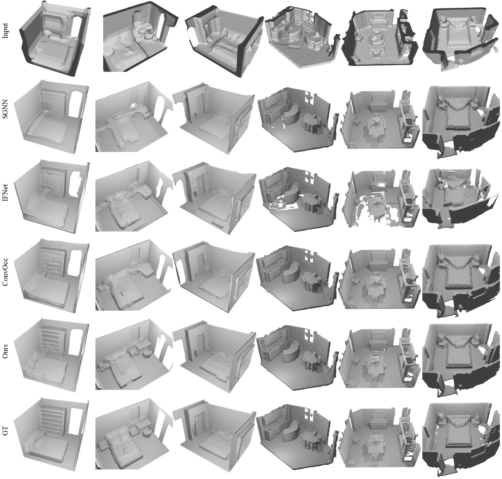
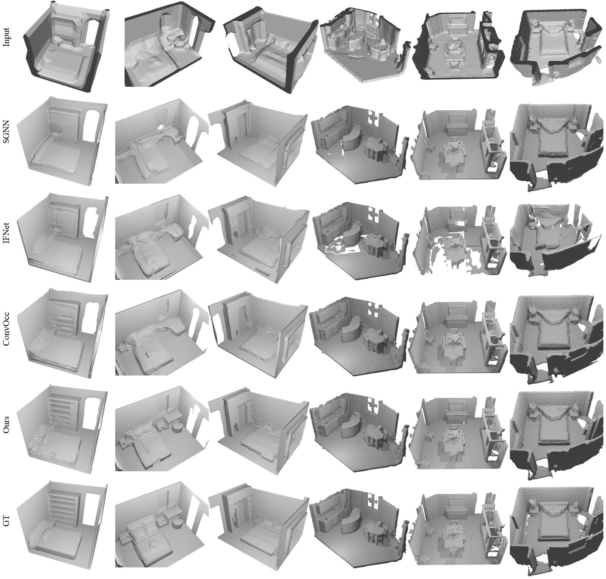

RetrievalFuse
Neural 3D Scene Reconstruction with a Database
1Technical University of Munich 2Apple
Video
Abstract

3D reconstruction of large scenes is a challenging problem due to the high-complexity nature of the solution space, in particular for generative neural networks. In contrast to traditional generative learned models which encode the full generative process into a neural network and can struggle with maintaining local details at the scene level, we introduce a new method that directly leverages scene geometry from the training database. First, we learn to synthesize an initial estimate for a 3D scene, constructed by retrieving a top-k set of volumetric chunks from the scene database. These candidates are then refined to a final scene generation with an attention-based refinement that can effectively select the most consistent set of geometry from the candidates and combine them together to create an output scene, facilitating transfer of coherent structures and local detail from train scene geometry. We demonstrate our neural scene reconstruction with a database for the tasks of 3D super resolution and surface reconstruction from sparse point clouds, showing that our approach enables generation of more coherent, accurate 3D scenes, improving on average by over 8% in IoU over state-of-the-art scene reconstruction.
Figures
Click to enlarge and view caption.![Overview|We present a new approach for 3D reconstruction conditioned on sparse point clouds or low-resolution geometry. Rather than encoding the full generative process in the neural network, which can struggle to represent local detail, we leverage an additional database of volumetric chunks from train scene data. For a given input, multiple approximate reconstructions are first created with retrieved database chunks, which are then fused together with an attention-based blending - facilitating transfer of coherent structures and local detail from the retrieved train chunks to the output reconstruction.](figures/method_overview.jpg) 3 chunks each by unfold-n; input/target chunks are embedded into a shared space which is trained using a contrastive loss.The database is composed of embedded target chunks from the train set, and used for retrieval for new input queries.
3 chunks each by unfold-n; input/target chunks are embedded into a shared space which is trained using a contrastive loss.The database is composed of embedded target chunks from the train set, and used for retrieval for new input queries.(b) For a new input, the k-NN retrieved chunks create approximate reconstructions, which can then be refined."/>


![Architecture|Network architecture used in our 3D super-resolution experiments. Convolution parameters are given as (input features, output feature, kernel size, stride), with default stride of 1 if not specified. Array of circles represent fully connected (FC) layers.
For the task of point cloud to surface reconstruction, the input chunk embedding network is a convolutional layer instead of MLP with a fully connected layer at the end on account of larger input chunk size (since input is a 128<sup>3</sup> grid for surface reconstruction in comparison to 8<sup>3</sup> grid for super-resolution, we use a chunk size of 32<sup>3</sup> for inputs there). Additionally, the input feature extractor is deeper for point cloud to surface reconstruction on account on bigger input grid.](figures/appendix_architecture.jpg)
![Architecture (Implicit)|Integration of our RetrievalFuse approach to the implicit network of IFNet. We use IFNet's encoder as the input feature encoder and their decoder as the implicit decoder. Additionally, we use a retrieval encoder similar to the IFNet encoder for obtaining features for the retrieval approximations. Further, a patch attention layer computes a blend coefficient grid and attention weight grid. For a given query point in space, features are sampled from input feature grids, retrieval feature grids. A blend coefficient value and attention weights are sampled from the blend coefficient grid and attention weight grid at the queried point. The sampled input features and retrieval features are blended based on these valued and finally decoded to an occupancy value by the IFNet decoder.](figures/appendix_implicit.png) (b) Input queries and their corresponding 4 nearest neighbors from the embedding space. For the sake of visual clarity, input queries are visualized as their corresponding ground truth reconstruction."/>
(b) Input queries and their corresponding 4 nearest neighbors from the embedding space. For the sake of visual clarity, input queries are visualized as their corresponding ground truth reconstruction."/>


![Subobtimal Retrievals on ShapeNet subset experiment|(Left) Suboptimal retrievals (NN1) when the our method is trained on a ShapeNet subset of 8 classes and evaluated on another 5 classes. The database contains chunks only from the original 8 classes. In this case, the suboptimal retrievals don't help the reconstruction, and the quality of reconstruction does not significantly improve over our backbone network. However, in contrast to naive fusion of retrieval features, our reconstruction quality does not degrade over the backbone.<br/>(Right) If the database if augmented with new chunks from train set of the new 5 classes, the reconstruction quality visibly improves without retraining.](figures/appendix_robust.jpg) 


Publication
 If you find our project useful, please consider citing us:
If you find our project useful, please consider citing us:
@article{siddiqui2021retrievalfuse,
title = "{RetrievalFuse: Neural 3D Scene Reconstruction with a Database}",
author = {{Siddiqui}, Yawar and {Thies}, Justus and {Ma}, Fangchang and {Shan}, Qi and {Nie{\ss}ner}, Matthias and {Dai}, Angela},
journal = {arXiv e-prints},
keywords = {Computer Science - Computer Vision and Pattern Recognition},
year = 2021,
month = mar,
eid = {arXiv:2104.00024},
pages = {arXiv:2104.00024},
archivePrefix = {arXiv},
eprint = {2104.00024},
primaryClass = {cs.CV},
}